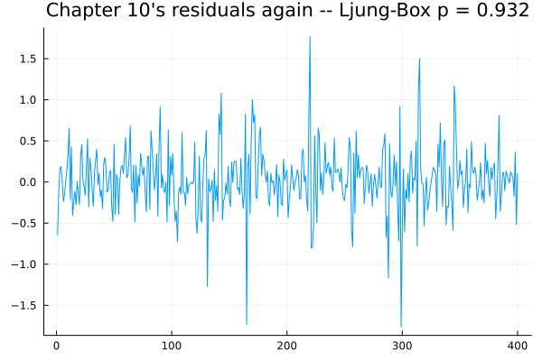
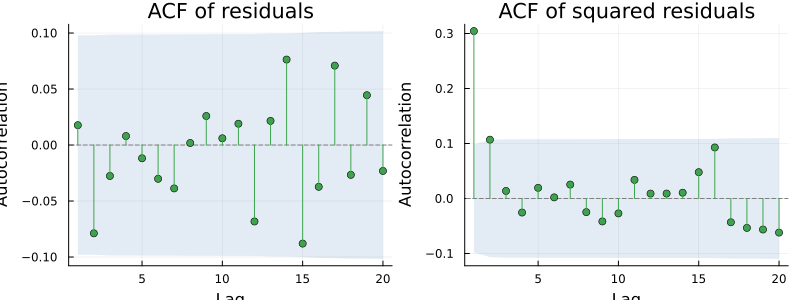
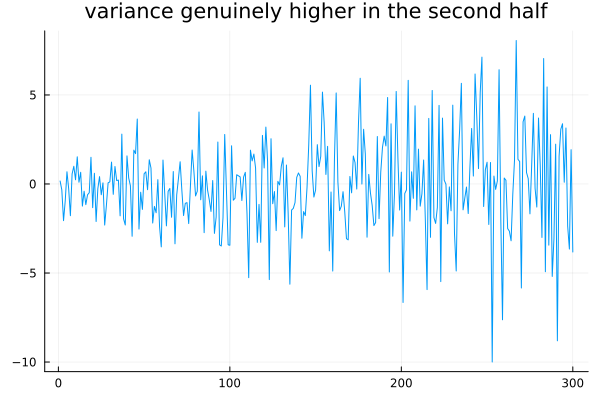
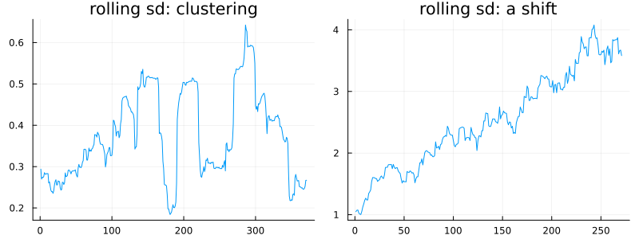
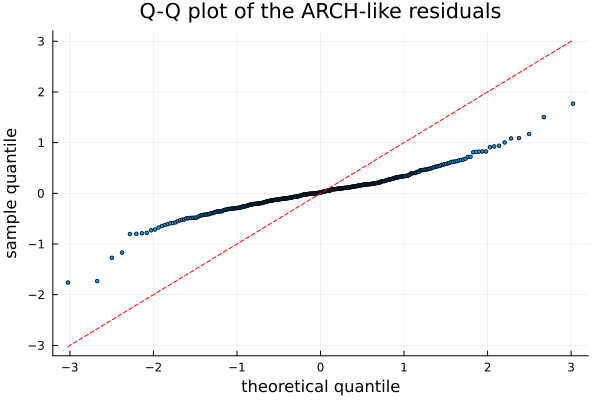

Testing Distribution and Variance
using TSAnalytics, Plots, Random
Random.seed!(20)
n = 400
e = randn(n)
resid = zeros(n)
resid[1] = e[1]
for t in 2:n
resid[t] = sqrt(0.05 + 0.85 * resid[t-1]^2) * e[t]
end
lb = ljungbox_test(resid, 10)
plot(resid; title="Chapter 10's residuals again -- Ljung-Box p = $(round(lb.pvalue, digits=3))", legend=false)
The same residuals, the same comfortable Ljung-Box p-value, the same obvious structure sitting in plain view. Every test in Chapter 10 asked one question — is there correlation left in these residuals? — and the honest answer was no. The question itself was incomplete. Quiet stretches followed by violent ones is real structure, it is genuinely predictable, and it is invisible to any test of correlation, because the sign of the next residual really is as unpredictable as noise. It is the size that is not.
Look at the squares
The obvious next move, and it works immediately.
p1 = plot(acf(resid, 1:20); title="ACF of residuals")
p2 = plot(acf(resid.^2, 1:20); title="ACF of squared residuals")
plot(p1, p2; layout=(1,2), size=(800,300))
The first panel is clean, exactly as the comfortable Ljung-Box p-value already said. The second is not — the squared residuals are strongly autocorrelated, out to many lags at once. A large residual, of either sign, tends to be followed by another large residual. Squaring the series discards the sign and keeps the magnitude, and it is the magnitude that carries the memory. This one pair of panels contains the entire idea of conditional heteroskedasticity, and it arrives here before any formula has been written down.
Testing it properly
r1 = arch_lm_test(resid)
Random.seed!(1)
white_noise = randn(500)
r2 = arch_lm_test(white_noise)
println("ARCH effects present: stat=", round(r1.statistic, digits=3), " p=", r1.pvalue)
println("white noise: stat=", round(r2.statistic, digits=3), " p=", round(r2.pvalue, digits=4))ARCH effects present: stat=37.478 p=1.4356062836897578e-7
white noise: stat=2.997 p=0.5583Both directions, which is what makes a test trustworthy rather than merely enthusiastic — it fires decisively where ARCH effects are genuinely present and stays quiet on plain white noise. The construction is unusually transparent, worth walking through because it is little more than the previous chart turned into a number: regress the squared residuals on their own lagged values, and ask whether that regression explains anything real. If squared residuals genuinely predict squared residuals, volatility has memory.
for lags in (2, 4, 8, 12)
r = arch_lm_test(resid, lags)
println("lags=", lags, ": stat=", round(r.statistic, digits=2), " p=", r.pvalue)
endlags=2: stat=37.28 p=8.050658748834005e-9
lags=4: stat=37.48 p=1.4356062836897578e-7
lags=8: stat=38.46 p=6.176723895723181e-6
lags=12: stat=39.82 p=7.688684551253471e-5The lag count is a real choice with no canonical answer, the same tension met already with the portmanteau tests. Too few lags and slow-moving volatility is missed; too many and power dissipates across lags that add nothing. Four is the conventional choice for monthly data. Conventional is not the same thing as correct.
Variance that shifts rather than clusters
A different failure, with a different remedy.
Random.seed!(456)
n2 = 300
t = 0:n2-1
resid_shift = randn(n2) .* (1 .+ 3 .* t ./ n2)
plot(resid_shift; title="variance genuinely higher in the second half", legend=false)
This is not clustering. There is no alternation between calm stretches and turbulent ones — there is one level of variability early on, and a steadily higher one later. ARCH-LM may or may not fire on this, because what is happening here is not a lag-by-lag dependence between nearby squared residuals; it is a slow, one-directional drift in the scale of the whole process.
rh = dk_heteroskedasticity_test(resid_shift)
resid_homo = randn(n2)
rc = dk_heteroskedasticity_test(resid_homo)
println("shifting variance: stat=", round(rh.statistic, digits=3), " p=", rh.pvalue)
println("constant variance: stat=", round(rc.statistic, digits=3), " p=", round(rc.pvalue, digits=3))shifting variance: stat=4.611 p=2.9953817204386723e-13
constant variance: stat=1.026 p=0.898Durbin and Koopman's variance-ratio test is aimed exactly at this: it splits the standardised residuals into thirds and compares the sum of squares in the last third against the first, discarding the middle. The statistic is unusually easy to read on its own — it is literally a ratio of variances, so 0.987 on the constant-variance series means the two ends are almost identical, essentially the number a ratio of two equal variances should produce, and 4.611 on the shifting series means the last third is more than four and a half times as variable as the first. The number states the size of the problem directly, not merely that a problem exists — most test statistics do not wear their meaning this plainly.
rolling_sd(v, w) = [sqrt(sum(abs2, v[max(1,i-w+1):i]) / w) for i in w:length(v)]
p1 = plot(rolling_sd(resid, 30); title="rolling sd: clustering", legend=false)
p2 = plot(rolling_sd(resid_shift, 30); title="rolling sd: a shift", legend=false)
plot(p1, p2; layout=(1,2), size=(800,300))
The visual counterpart makes the distinction concrete. Clustering shows up as a rolling standard deviation that oscillates, rising and falling repeatedly. A variance shift shows up as one that steps once from one level to a higher one and stays there. Two different pictures, two different tests, and two different remedies — a GARCH model for the first, since GARCH is built around exactly this kind of reverting volatility, and an intervention term or a transformation for the second, since nothing about GARCH's own machinery expects variance to move to a new level and simply stay there.
Is it normal, and does it matter?
sorted_r = sort(resid)
n3 = length(sorted_r)
theoretical_q = [TSAnalytics._std_normal_quantile((i - 0.5) / n3) for i in 1:n3]
scatter(theoretical_q, sorted_r; markersize=2, legend=false,
xlabel="theoretical quantile", ylabel="sample quantile", title="Q-Q plot of the ARCH-like residuals")
lo, hi = extrema(theoretical_q)
plot!([lo, hi], [lo, hi]; color=:red, linestyle=:dash)
The tails depart from the reference line, usually more than a casual glance expects, and this is the normal state of residuals from a volatile process. A Q-Q plot carries more information than any single normality test, because it shows where the departure sits — in the tails, near the centre, or lopsided to one side — and that location is what determines whether the departure actually matters for what the model will be used for.
function contaminated_normal(n)
v = randn(n)
for i in 1:n
rand() < 0.1 && (v[i] *= 3.0)
end
return v
end
Random.seed!(11)
for n4 in (50, 500, 5000)
y = contaminated_normal(n4)
jb = jarque_bera_test(y)
println("n=", n4, ": JB=", round(jb.statistic, digits=2), " p=", jb.pvalue)
endn=50: JB=1.86 p=0.3951182186106522
n=500: JB=1134.52 p=4.377717739483371e-247
n=5000: JB=7856.29 p=0.0Jarque-Bera combines skewness and excess kurtosis into a single statistic testing normality directly. Its practical weakness shows up plainly above: the same mild contamination — one draw in ten scaled up threefold, nothing more dramatic than that — fails to reject at n = 50, rejects overwhelmingly by n = 500, and by n = 5{,}000 the p-value has underflowed to zero. Nothing about the underlying non-normality changed across the three cases; only the sample size did. On a long series, Jarque-Bera rejects almost always, because real data is never exactly normal and a large n is enough to prove it — a rejection on ten thousand observations says very little on its own.
The honestly useful answer to "does non-normality matter" is not about p-values at all. Point forecasts are usually fine regardless. Prediction intervals are not — they are built from normal quantiles by construction, and if the true tails are heavier than normal, the intervals will be too narrow and their advertised coverage will not be delivered in practice. That is the answer worth carrying forward, and it says more than any single test result does.
Indian equity and currency series show variance shifts tied to identifiable policy moments, not merely ordinary clustering — the 1991 liberalisation, the 2016 demonetisation announcement, and the introduction of currency futures each mark a point where the variability of the relevant series changed level and stayed changed. That distinction matters for choosing a remedy. A GARCH model treats volatility as something that wanders and reverts, which is the right picture for ordinary clustering. Fitting GARCH across a genuine one-off regime change instead produces a model that persistently over-predicts volatility through the calm period and under-predicts through the turbulent one — the right diagnostic tool, aimed at the wrong kind of variability.
Where this leaves you
Three questions can now be asked of any set of residuals: is there correlation left, is the variance stable, and is the distribution roughly normal. Asking all three by hand, one at a time, is tedious enough that in practice it gets skipped. Chapter 12 assembles them into a single picture meant to be looked at every time, cheaply enough that skipping it takes more effort than doing it.
One thread stays open further out. This chapter's second chart showed volatility with real memory, and nothing built in this book yet models it directly. ARCH-LM is the test that sends the rest of the book there — Part V.